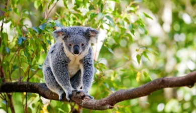

Discover Koalas: Australia’s Iconic Tree Dwellers
Koalas are one of the most beloved animals in Australia, known for their adorable appearance and peaceful nature. These tree-dwelling marsupials are native to the eastern and southeastern regions of Australia, where they live in eucalyptus forests. Koalas are recognized for their large, fluffy ears, large black noses, and their slow-moving, sleepy behavior.
What Are Koalas?
Koalas are marsupials, meaning that after birth, their babies (called joeys) continue to grow and develop in their mother's pouch. Unlike many other marsupials, koalas are strictly arboreal, spending almost their entire lives in the trees. Their strong claws and specialized hands allow them to expertly climb and cling to branches, where they sleep, eat, and raise their young.
Fun Facts About Koalas
- Koalas are mostly nocturnal and sleep between 18-22 hours a day to conserve energy.
- They can live up to 10-12 years in the wild, though habitat loss poses a significant threat to their populations.
- Despite their slow-moving, sleepy nature, koalas can leap from tree to tree when threatened.
- Koalas have a keen sense of smell and can detect the best eucalyptus leaves from a distance.
- Koalas' large ears help them hear other koalas' calls, especially during the breeding season.
Why Are Koalas Important?
Koalas play a vital role in maintaining the health of eucalyptus forests by helping to control the growth of trees and supporting the biodiversity of their habitats. However, koalas face threats from habitat destruction, bushfires, climate change, and disease. Conservation efforts are crucial to ensuring that these iconic animals remain a part of Australia's unique ecosystem.
Learn more about the koala's habitat and diet by visiting the other pages on this website.